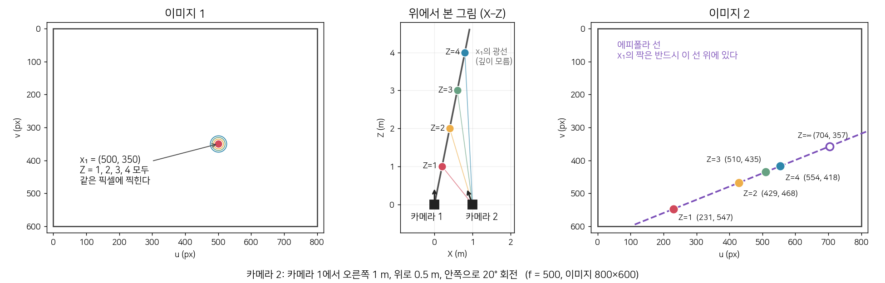

| cos θ | sin θ |
| −sin θ | cos θ |
3D: z_c · (u, v, 1)ᵀ = K [R | t] (X, Y, Z, 1)ᵀ, K = [[f, 0, c_x], [0, f, c_y], [0, 0, 1]]
각 칸 왼쪽 = 창 주변 확대 (이미지 그대로). 오른쪽 = 창 밀기 지도 E(u, v): 이미지 밝기가 아니라, 창을 가로·세로 ±12 픽셀 밀었을 때 원래 창과의 차이다. 옅음 = 밀어도 비슷함, 진함 = 밀면 달라짐, 가운데 칸 = 밀지 않음(차이 0). 코너는 가운데만 옅다 = 어느 방향으로 밀어도 달라진다.

| a |
| b |
| c |
| f11 | f12 | f13 |
| f21 | f22 | f23 |
| f31 | f32 | f33 |
| u_1 |
| v_1 |
| 1 |
자료: DTU MVS 2014 (Aanæs et al., IJCV 2016). 대응점 = SIFT 매칭 624쌍. 기준 F = DTU 보정 카메라로 계산한 F. 정상/틀린 대응점은 기준 F에서 2 픽셀 기준으로 나눔.